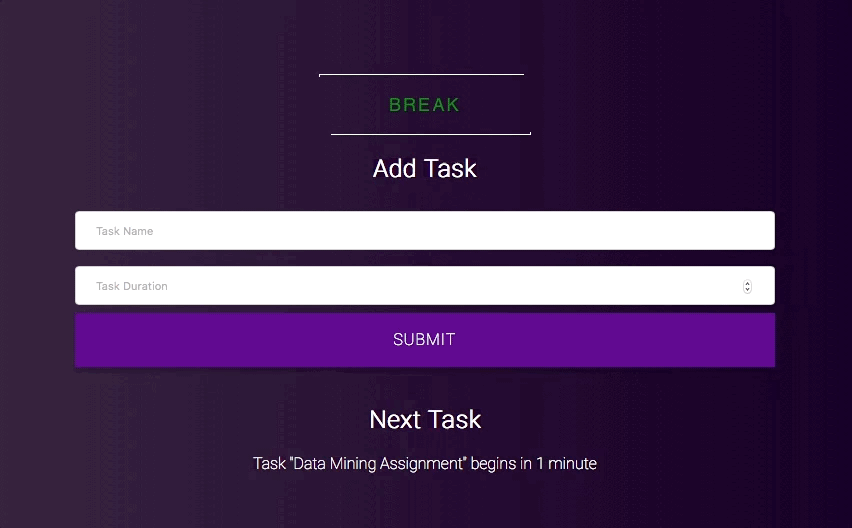
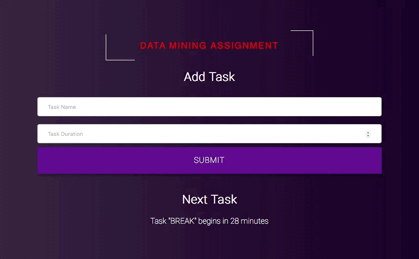

Prodactive
Active Productivity Monitoring Tool
This was my team project for HackTX 2017. It was a top 10 finalist project and we also won best use awards from sponsors.
The Tool
The goal with building this tool is to have a fully functional productivity application that can actively engage with a user and help the user be more productive. There are many content blockers and many to-do-lists but our vision was to have something run in the background that both manages the user's time and ensures that the user is being productive. The result was Prodactive.
- Chrome Extension
- Edge Extension
- Cortana Bot
- Website
Use Case
 We started off reading about a John Hopkins' research study on ways to improve productivity. We then looked into how we could put these methods into practice. First, we decided on the techniques we found most essential for improving productivity, and from there, we implemented them in an integrated manner as a Microsoft Edge and Chrome extension that would be convenient and not distracting to the user.
Some of the features we successfully implemented include creating a scheduling mechanism that allows the user to plan a task from start to completion, given an estimated duration of the task. This sets us apart from other productivity apps, since we schedule tasks in terms of the time they will take to complete, as opposed to setting aside chunks of a day to finish something. This more closely simulates how normal people get work done. The scheduler automatically alerts the user when to take breaks or continue working. It also allows the user to choose between several modes of working, such as casual, productive, or time crunch. We also keep track of the time a user spends on any particular website using Chrome and Edge extensions. This allows our extension to actively alert the user whenever they have exceeded a certain amount of time on "unproductive" websites. These should be customizable by the user but they may include websites such as Facebook, Twitter, and YouTube. All of these websites can be used to both boost and limit productivity - so, a user will need to define this by their specific needs. The application will then be able to tell what time is actually used on productive websites as opposed to leisure sites. Depending on the settings, the tool will be able to completely block the page. Of course, once the tool determines that the user is on break, the restrictions will be relaxed.
We integrated with Microsoft's bot framework so that users can easily schedule tasks (using text or voice commands). LUIS allowed us to extract intents from the user-inputted command using Machine Learning, and we then make an API call to the Azure server to log the task and start the timer. The Azure server is also used to aggregate user data for statistics about time spent on different websites. On the front end side, this data is displayed on a custom website that also allows users to input tasks manually, see the amount of time they have left on a certain task, and view their personal statistics in a user-friendly format.
Usage
Download the extension from the GitHub linked above and upload the extension to your browser. Once the extension is active, settings, monitoring, and analytics will be on prodactive.tech. (Website might go down after a while. It is running on our personal GCP accounts.)
My Role
Although not linked to me on GitHub since I did not push with my account, I was responsible for the website and for the server. I built the entire website component to the project and most of the API. I also designed and wrote the event scheduler, the extension UI, and the link between the website and the extensions/bots.
Next Steps
The tool does not support user login. Integrating with Facebook or some third-party service would help with this. Until then, all data is accumulated on the page. Also, there are some privacy concerns to be addressed. Usage data, although not linked to any user, is public. Use at your own risk ;)